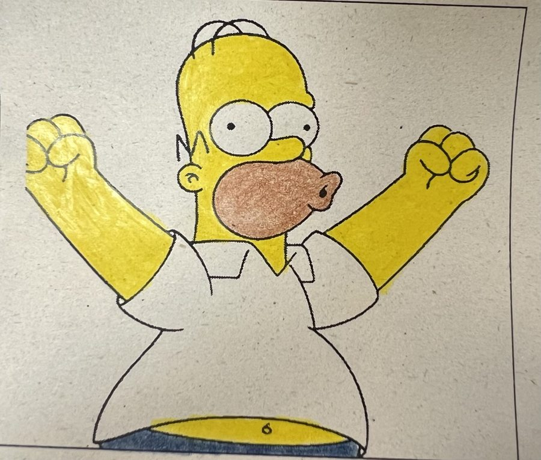
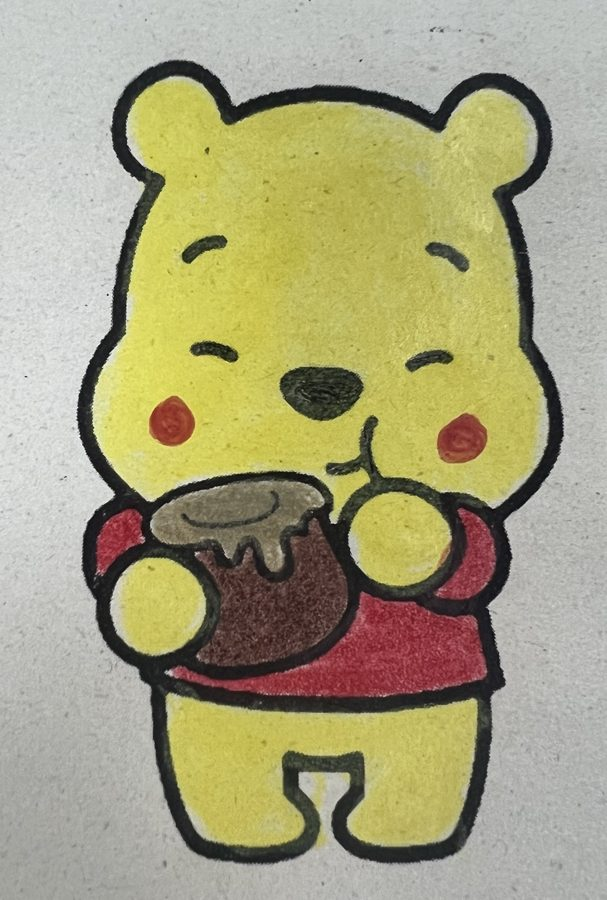
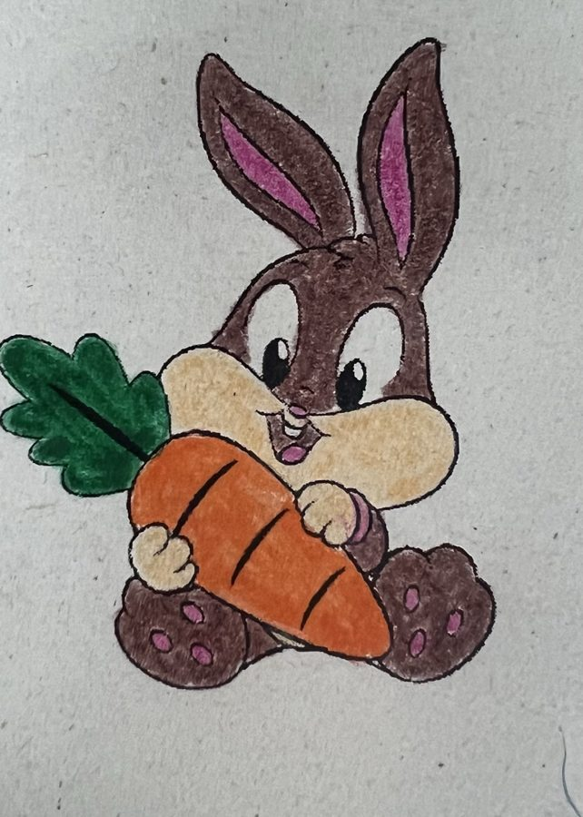
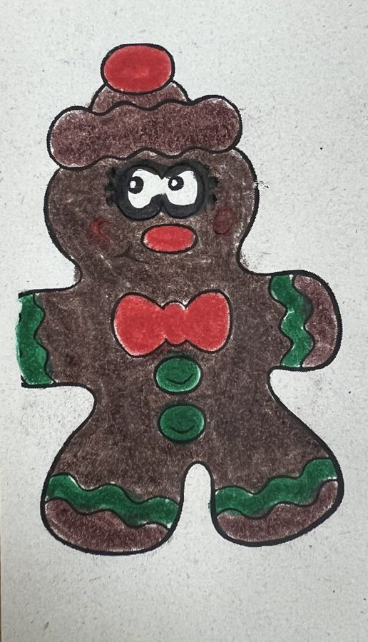
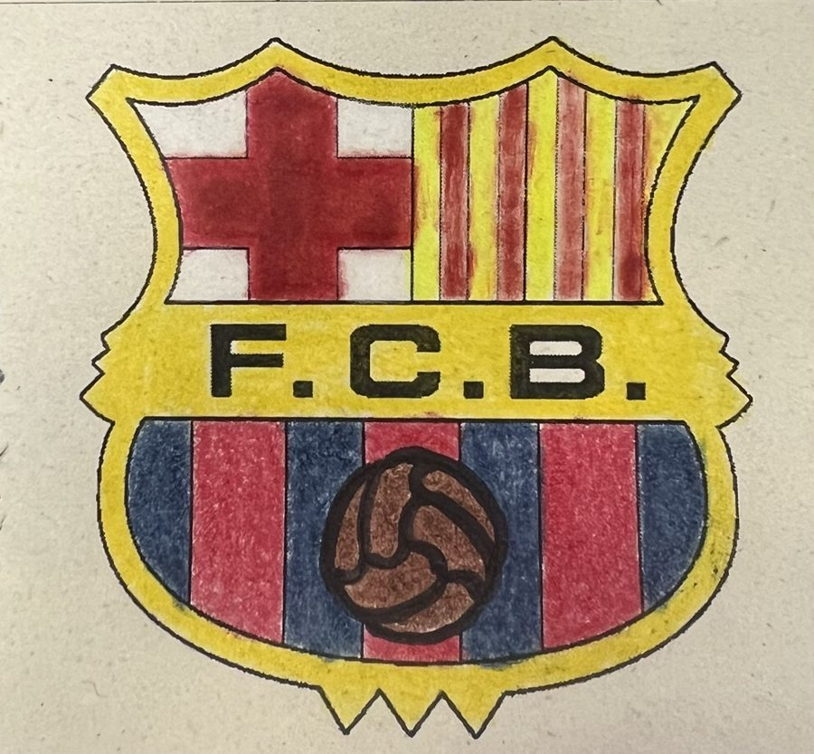
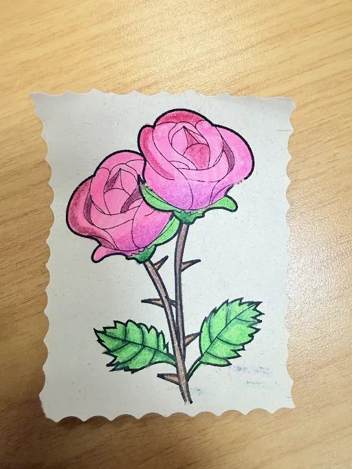

01
María Camila Pinzón
Homero Simpson
Conoce a nuestro equipo a través de sus ilustraciones, coloreadas a mano una por una.
Ver la galeríaUno por uno, con su obra.

Homero Simpson

Winnie Pooh

Bugs Bunny

Galleta de jengibre

Escudo del Barcelona

La rosa
[Escribe aquí una breve descripción del proyecto, la materia o el curso.]
© 2026 · Nuestra Galería